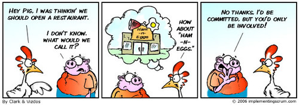

Seriously… ’Why did the chicken cross the road?’
—
MARKETING
We’ll recruit a representative chicken panel and probe their attitudes toward crossing the road.
SALES
Not my problem. I just have to convince the chicken to come to our side of the road, it’s up to customer service to keep her there.
CUSTOMER SERVICE
If we had a CRM system that truly met our needs, I would have known the chicken was dissatisfied, and presented her with a save offer.
CREDIT AND COLLECTIONS
The chicken didn’t give us 30 days written notice that she was going to cross the road, so she will still have to pay for the month of October.
PRODUCT DEVELOPMENT
Too many chickens are migrating to the other side of the road. We need to create a new side of the road.
MERGERS AND ACQUISITIONS
Our recommendation is to buy the other side of the road.
FINANCE
We can buy the other side of the road as long as we can close it and merge it with our existing side of the road operations.
EXECUTIVE COMMITTEE
Let’s get a consultant in here who’s knowledgeable about migratory chickens.
LEGAL
We can’t afford the liability. Effective immediately, all chickens are prohibited from crossing the road for any reason.